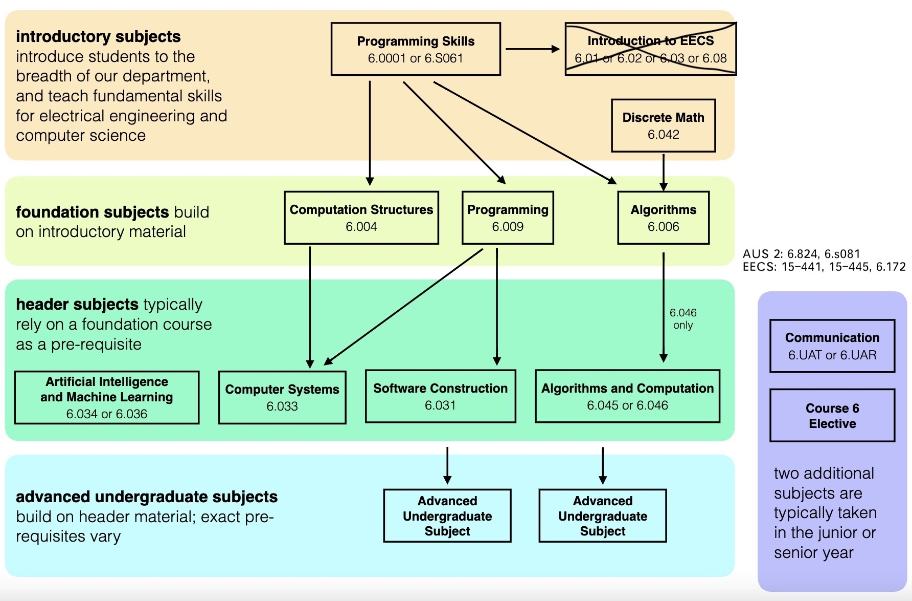

About Me¶
I like studying computer science through open courses. While having stumbled many times, I’ve learned from mistakes and developed an interest in storages and system programming. I was very fortunate to get an Outreachy 2022 Internship working with QEMU which has embarked my journey of open source world. During the year after the summer project, I added full emulation to the qcow2 driver and made the metadata of ZNS emulation persistent with the help of my mentors in QEMU. My primary objective is to gain a solid understanding of the fundamental principles that underpin our world and the ability to build practical applications in life.
Nowadays I am a software engineer building a Linux kernel module that distributes and replicates data to a block-based storage cluster over RDMA networks.
Slides¶
2024¶
Zoned Emulation Support for QEMU at Linux Plumbers Conference 2024, slides(pdf).
OCW¶
course plan:
Applied Math¶
IAP¶
Selective¶
HASS¶
已弃：
（对我）过理论的数学课比如数学分析OTL社会科学的书籍zzz生科的任何课尤其是实验perfection & procrastination金融学理论statistics
Harvard Systems Programming and Machine Organization Course. Great system programming 101 (21 schedule, 23 lab). 15-213 is also a good choice. ↩︎
19fall materials(tutorials, recitations) ↩︎
22spr labs/schedule & 20spr outline/videos of Robert Morris ↩︎
study materials from 6.823 22fall as reading supplements ↩︎
current 6.5810 ↩︎
supplement reading as 6.7960 deep learning 24fall ↩︎